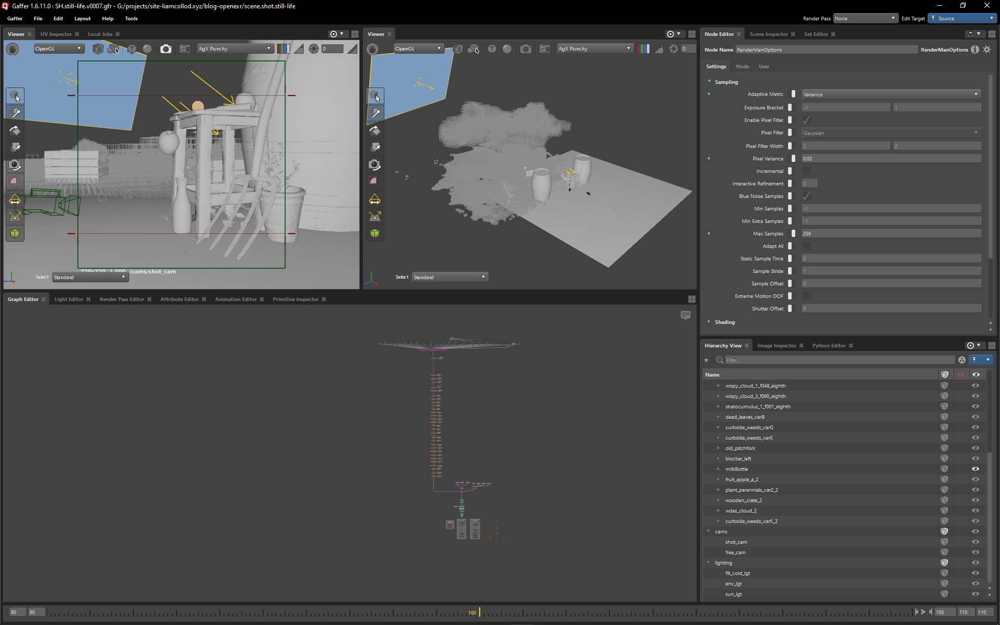

breakdown

The Cloud-Farm
My last personal 3d project was 5 years ago. Not anymore ! It all started from a technical blog post and the need to understand more some concept with practice. Then find way to illustrate those concepts to others. But where do you even start ? And even how ? All the software I learnt to use for my job are behind paywalls. Blender ? It doesn't support the specific feature I need to showcase. I found my answer in Gaffer which I had on my todo list since forever. Paired with RenderMan and there goes my software workflow for 0€. Still what do I want to show ? How do I even craft the assets ? I went with the most time-saving solution: relying on Megascans. And the dumbest way possible, no concept, no planning, just assembling pre-made asset together until I get something interesting. My only constraints were that I had to have some volumetrics and a motion-blurred object. And slowly, a concept appeared: up-in the sky they are harvesting clouds... a cloud farm !
Credits:
- photogrametric assets: Quixel Megascans
- clouds: Samuel Krug; Disney Animation
- milk bottle: Harsh Agrawal
Download:
If you want to play with it, or use it for testing purposes you can download the source render:
It's a half-float deep exr with the usual RGBA channels and the 2 extra Z channels for deep.
The above .exr file is licensed under the following terms:
You are free to use the file provided "as is" without warranty of any kind, as long as:
- you are an individual human being
- you are not any of a misogynist, racist, fascist, terf, queerphobe, bigot, antisemitic, islamophobe, genocide-denialer, history-negasionist piece of shit.
- you do not support any individual or entities matching the previous criterias.
- the .exr file is not used for the purpose of training or improving machine learning algorithms.
- you include this page url as a credit next to any work making use of the .exr file.